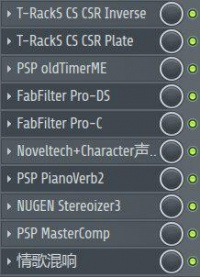

与音MAD和鬼畜这两个舶来的词汇不同，“鬼畜音MAD”是一个不折不扣的天朝自造的特有词汇，其被创造的过程要比简单地把“鬼畜”和“音MAD”拼在一起要复杂。
| 鬼畜音MAD | |
|---|---|
 情歌混响 | |
|
释义 |
|
|
场合 |
不应于任何场合使用 |
|
评分 |
★★★ |
最早使用“鬼畜音MAD”这个词的人是天朝最开始认识和了解音MAD概念的群体中的一部分人，由于天朝大部分人脑中并没有音MAD的概念，所以这些人认为应该将在天朝更为人知的“鬼畜”加入到对音MAD的描述中，这样可以更好地普及和推广音MAD。
然而现状是鬼畜在天朝的发展过程中逐渐被扭曲、异化，成为了与音MAD不同的视频类型，但是这些人却忽视甚至不承认这样的现状，仍然将音MAD称为“鬼畜音MAD”。
目录
相关人物
打着“复兴音MAD”旗号盈利的徐保策，将音MAD称为“鬼畜（音MAD）”。
应对态度和方式
作为真正的音MAD爱好者，对于将音MAD称为“鬼畜音MAD”这种，将两个不同的视频类型混为一谈，指鹿为马，企图混淆视听，误导他人的行为，要坚决反对和抵制，并用话语和实际行动将真相告诉给更多的人。